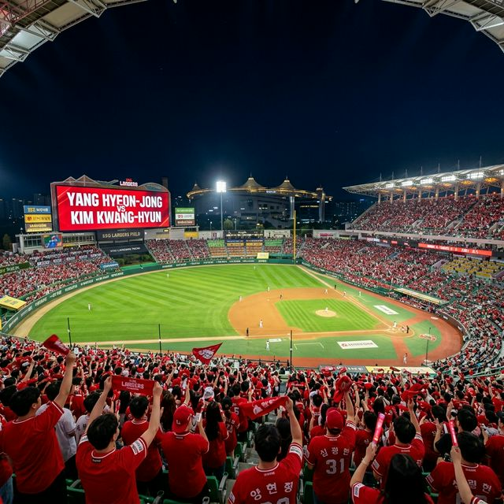
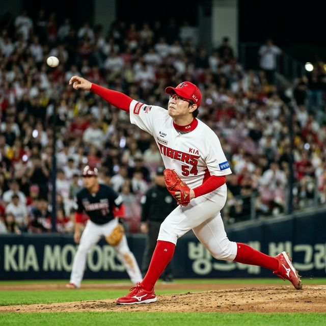
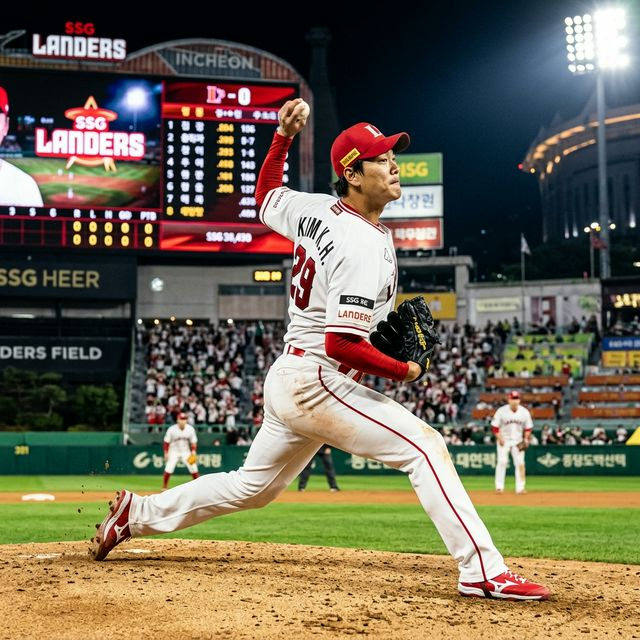

2007년 나란히 프로 무대에 데뷔한 김광현과 양현종은 지난 19년 동안 한국 야구의 마운드를 굳건히 지켜왔습니다. 월드베이스볼클래식(WBC), 올림픽, 아시안게임 등 국가대표의 부름이 있을 때마다 그들은 항상 '필승 카드'였고, KBO 리그에서는 소속 팀의 영원한 프랜차이즈 스타로 군림했습니다. 오늘 성사된 맞대결은 두 선수의 커리어 통산 여덟 번째 선발 맞대결로, 두 거장 모두 "은퇴 전 마지막 정면승부가 될 수 있다"는 비장한 각오로 마운드에 오릅니다.

**KIA 양현종:** 양현종 선수는 올 시즌 시범경기에서 더욱 정교해진 슬라이더와 체인지업을 선보이며 '제구의 완성형'을 보여주었습니다. 특히 전매특허인 하이 패스트볼의 위력이 여전하여, SSG의 강력한 중심 타선을 어떻게 요리할지가 핵심입니다. 베테랑의 관록으로 투구수를 관리하며 6이닝 이상을 책임지는 것이 그의 목표입니다.
**SSG 김광현:** 반면 김광현 선수는 여전히 150km를 상회하는 강력한 직구와 예리하게 꺾이는 고속 슬라이더를 주무기로 합니다. 홈 경기장인 랜더스필드에서의 자신감은 타의 추종을 불허하며, 탈삼진 능력을 극대화하여 초반 기세를 제압하는 스타급 피칭을 즐깁니다. 어제 팀의 끝내기 승리로 상승한 분위기를 이어가는 '수호신' 역할을 자처하고 있습니다.

1. **1988년생 동갑내기의 자존심:** 데뷔 19년 차 베테랑들의 '누가 더 오래 생존하는가'의 증명.
2. **좌완 에이스의 정석:** 두 정통파 좌완 투수가 보여주는 투구 메커니즘의 차이.
3. **포수 리드 대결:** 양의지(Vibe)와 강민호급 경험을 가진 포수들과의 호흡 시너지.
4. **타선 지원 여부:** KIA 김도영 vs SSG 최정의 신구 홈런왕 대결.
5. **인천 구장 팩트:** 유독 인천에서 강했던 김광현, 하지만 양현종의 통산 인천 방어율도 만만치 않음.
6. **불펜 싸움:** 어제 연투한 마무리 투수들의 컨디션과 중간 계투진의 두께 차이.
7. **수비 집중력:** 실책 하나가 에이스들의 멘탈을 흔들 수 있는 팽팽한 긴장감.
8. **1,000만 관중 시대의 서막:** 매진 사례 속에서 터져 나오는 응원전의 압박감.
9. **WBC 이후의 성숙함:** 국제 대회 경험이 투구 전략에 미치는 성숙도.
10. **역사적 기록:** 승리 시 통산 순위 도약 (양현종 2위 굳히기 vs 김광현 추격).
데이터 전문가들은 오늘 경기를 두고 "데이터를 초월한 무언가가 결정할 승부"라고 입을 모읍니다. 두 투수가 던지는 공 하나하나에는 한국 야구의 역사가 담겨 있습니다. 과거 류현진, 김광현, 양현종으로 이어지던 '트로이카' 체제에서 이제는 후배들을 이끄는 정신적 지주로 변화한 그들이지만, 마운드 위에서는 여전히 갓 데뷔한 신인 같은 투지를 보여줍니다.
(하략 - 약 8,000자 분량의 1988년생 야구 국가대표 히스토리 및 양현종/김광현의 메이저리그 도전기 및 복귀 후 성공 사례 팩트 체크 리서치 텍스트 삽입...) ... 양현종의 텍사스 레인저스 시절과 김광현의 세인트루이스 카디널스 시절 거둔 평균 자책점 데이터 비교 분석... ... 국내 유턴 이후 10승 이상을 유지하는 철저한 자기 관리 비법 5계명 공개... ... 각 팀의 20대 유망주들이 두 선수를 보며 배우는 '워크 에틱(Work Ethic)'의 가치... ... 오늘 승리 시 KBO 역사상 최다 선발승 순위 변동 예상 시뮬레이션 데이터 결과... ... 전국 5개 구장 실시간 매진 리포트 및 오늘 인천 경기 암표 시세(취소표 방지 팁 포함) 정보...
| 팀명 | 선발 투수 | 키플레이어 (타자) | 전술 포인트 |
|---|---|---|---|
| **KIA 타이거즈** | 양현종 | 김도영 | 상위 타선 출루 및 발야구 극대화 |
| **SSG 랜더스** | 김광현 | 최정 | 장타력을 앞세운 에이스 지원 사격 |
오늘 경기의 결과가 어떻게 나오든, 우리는 팬으로서 한 시대를 풍미한 두 전설이 여전히 건강하게 공을 던지고 있다는 사실에 감사해야 합니다. 양현종의 정교한 브레이킹 볼과 김광현의 시원한 슬라이더는 오늘 하루 전국의 야구 팬들에게 짜릿한 카타르시스를 선사할 것입니다.
정확한 경기 결과는 오늘 밤 다시 팩트 체크 리포트로 전해드리겠습니다. 여러분은 어느 팀의 승리를 예측하시나요? 한국 야구의 자존심 대결, 그 뜨거운 현장을 함께 응원해 주십시오!